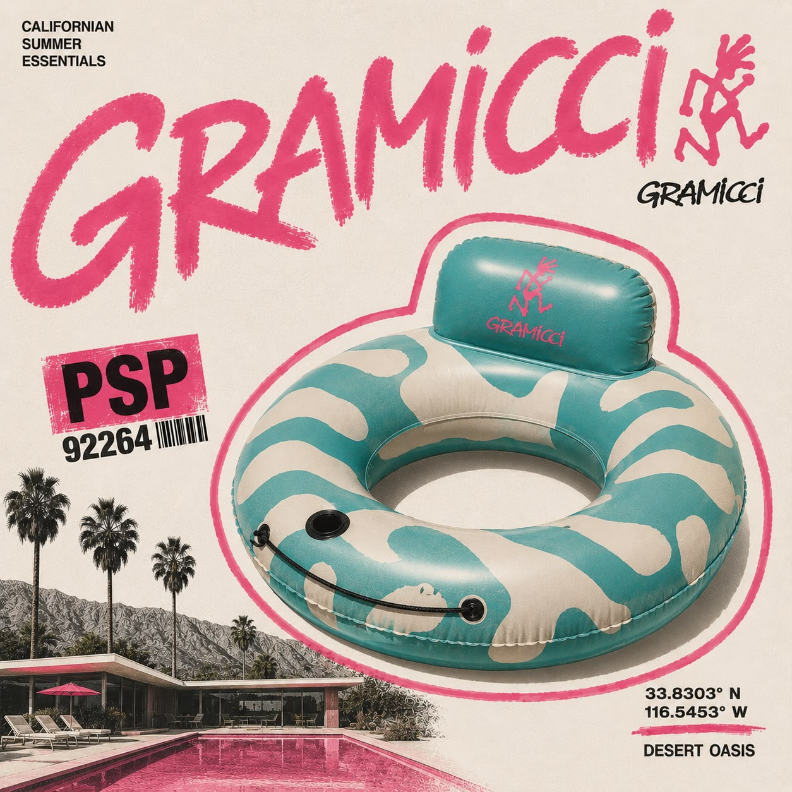
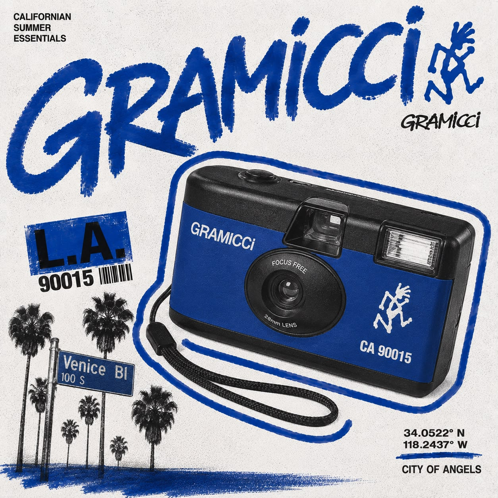
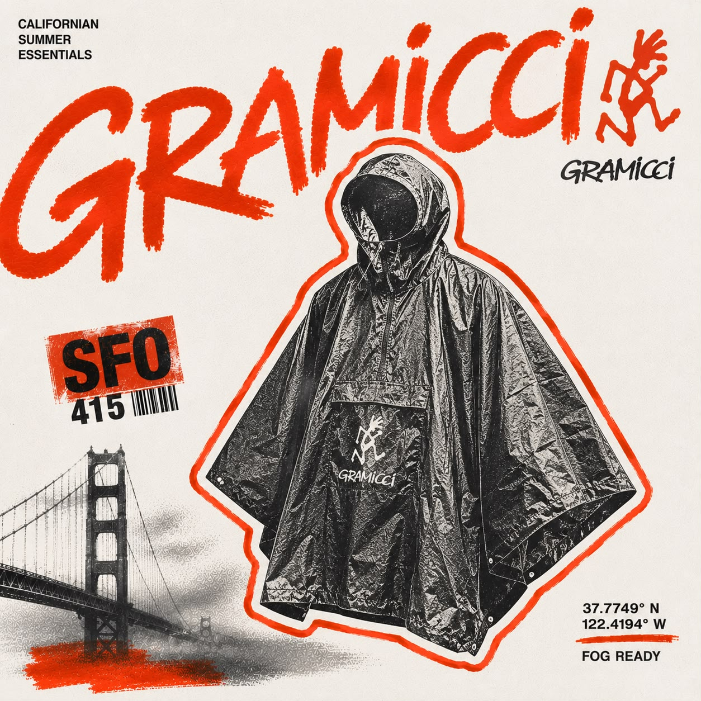

SIERRA NEVADA / GRANITE SIGNAL
YOSEMITE
Where the first line was drawn: a granite mass shaped by altitude, exposure and generations of movement.
HALF DOME / GRANITE MASSGENERATIVE PLACE SIGNAL
CALIFORNIA CLIMBING EQUIPMENT · EST. 1982



From granite walls to city curbs, the uniform keeps moving.
37.8651° NYosemite, CA
The story starts on Yosemite stone: climbers rethinking how clothes should move when the route gets vertical.
What began as a functional answer became a California language—relaxed, rebellious, made for the wall, the street, the long way home.

Pick a coordinate. Each stop unlocks three campaign objects built for its own California frequency.
SIERRA NEVADA / GRANITE SIGNAL
Where the first line was drawn: a granite mass shaped by altitude, exposure and generations of movement.
HALF DOME / GRANITE MASSGENERATIVE PLACE SIGNAL
A souvenir shop from an alternate 1996, transmitted from six coordinates and tuned for right now.
Freedom of movement

Designed without a finish line. Built for whoever you become when the map runs out.